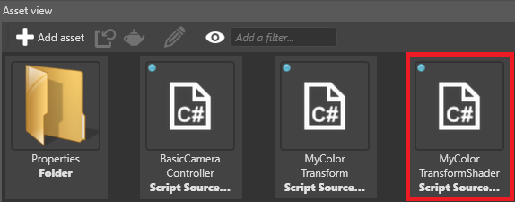

Custom color transforms
Advanced Programmer
You can write your own custom color transform effects. For example, you can create:
- water droplets on the camera
- screen transitions (such as fade-ins and fade-outs)
- effects simulating pain or intoxication (eg by applying tints or other effects)
- object outlines
To create a custom color transform, you need to write two files: an effect shader (containing the effect itself), and a C# class (to make the effect accessible in Game Studio).
1. Create a shader
Make sure you have the Stride Visual Studio extension installed. This is necessary to convert the shader files from SDSL (Stride shading language) to
.csfiles.In Game Studio, in the toolbar, click (Open in IDE) to open your project in Visual Studio.
In the Visual Studio Solution Explorer, right-click the project (eg MyGame.Game) and select New item.

Select Class.

In the Name field, specify a name with the extension .sdsl (eg MyColorTransformShader.sdsl), and click Add.
The Stride Visual Studio extension automatically generates a
.csfile from the.sdslfile. The Solution Explorer lists it as a child of the.sdslfile.Open the
.sdslfile, remove the existing lines, and write your shader.Shaders are written in Stride Shading Language (SDSL), which is based on HLSL. For more information, see Shading language.
For example, the shader below multiplies the image color by the
MyColorparameter:shader MyColorTransformShader : ColorTransformShader { [Color] float4 MyColor; override float4 Compute(float4 color) { return color * MyColor; } };Note
Make sure the shader name in the file (eg
MyColorTransformShaderin the code above) is the same as the filename (eg MyColorTransformShader.sdsl).
2. Create a C# class
In the Visual Studio Solution Explorer, right-click the project (eg MyGame.Game) and select Add > New item.
Select Class, specify a name (eg MyColorTransform.cs), and click Add.
Open the file and write the class.
For example, the code below creates the class
MyColorTransform, which uses the shader and supplies a value for the colorMyColor(defined in the shader).using Stride.Core; using Stride.Core.Mathematics; using Stride.Rendering; using Stride.Rendering.Images; namespace MyGame { [DataContract("MyColorTransform")] public class MyColorTransform : ColorTransform { /// <inheritdoc /> public MyColorTransform() : base("MyColorTransformShader") { } public Color4 MyColor { get; set; } public override void UpdateParameters(ColorTransformContext context) { Parameters.Set(MyColorTransformShaderKeys.MyColor, MyColor); // Copy parameters to parent base.UpdateParameters(context); } } }Note
Make sure the class name in the file (eg
MyColorTransformin the class above) is the same as the filename (eg MyColorTransform.cs).Save all the files in the solution (File > Save All).
In Game Studio, reload the assemblies.

The Asset View lists the class and effect shader in the same directory as your scripts (eg MyGame.Game).

Note
In some situations, Game Studio incorrectly detects the shader as a script, as in the screenshot below:

If this happens, restart Game Studio (File > Reload project).
3. Use a custom color transform
In the Asset View (in the bottom pane by default), double-click the Graphics Compositor asset.

The graphics compositor editor opens.

Select the Post-processing effects node.
In the Property Grid, under Color transforms, click
 (Change) and select your color transform (eg MyColorTransform).
(Change) and select your color transform (eg MyColorTransform).
To enable and disable the effect, use the check box next to the item.

To edit the public properties you specified in the class, expand the item.
When you adjust the properties, Game Studio updates the effect automatically.
Warning
Unfortunately, this part of Game Studio has a memory leak problem. Every time you change a value in the graphics compositor, it uses 60MB of memory. To prevent Game Studio using too much memory, we recommend you restart it after you change a property a few times. This is a known issue.